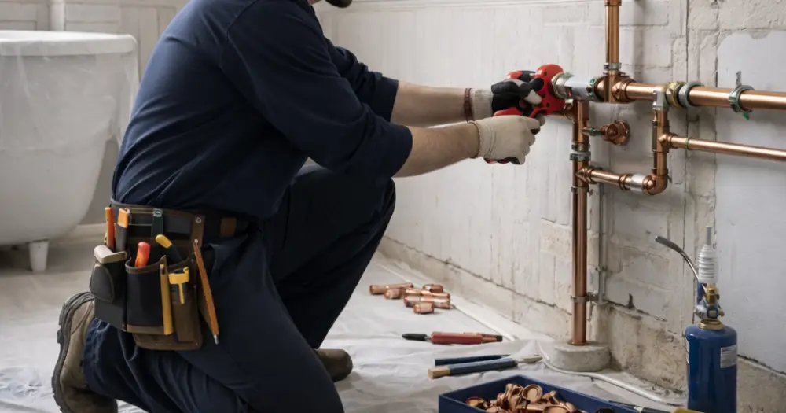

La rénovation plomberie Paris 17ème représente un enjeu majeur pour les propriétaires souhaitant moderniser leur logement en 2026. Que vous habitiez près des Batignolles, de Monceau ou de Ternes, les travaux de plomberie nécessitent une expertise technique pointue et le respect de réglementations strictes. Entre les nouvelles normes environnementales, l'évolution des matériaux et les spécificités de l'habitat parisien, entreprendre une rénovation de plomberie demande une préparation minutieuse. Ce guide vous accompagne dans votre projet en détaillant les étapes clés, les coûts à prévoir et les bonnes pratiques à adopter pour réussir vos travaux dans le 17ème arrondissement.
État des lieux et diagnostic de votre installation de plomberie
Avant d'entamer une rénovation plomberie Paris 17ème, un diagnostic complet s'impose. Les immeubles haussmanniens caractéristiques du 17ème arrondissement présentent souvent des canalisations en plomb ou en fonte, installées il y a plusieurs décennies. L'expertise d'un professionnel permet d'identifier les points critiques : fuites, corrosion, pression insuffisante ou conformité aux normes actuelles. En 2026, la réglementation impose le remplacement obligatoire des canalisations en plomb pour l'eau potable. Les signes d'alerte incluent une eau colorée, des débits faibles, des bruits dans les canalisations ou des traces d'humidité. Un diagnostic professionnel coûte entre 200€ et 400€ en Île-de-France, mais permet d'éviter les mauvaises surprises et d'optimiser votre budget travaux.
Les spécificités des immeubles parisiens du 17ème
L'architecture haussmannienne du 17ème arrondissement présente des défis particuliers : hauteur sous plafond importante, murs épais, et souvent des installations traversant plusieurs étages. Ces caractéristiques impactent directement le coût et la complexité des travaux de rénovation.
Réglementations et normes en vigueur en 2026
La rénovation plomberie Paris 17ème doit respecter un cadre réglementaire strict en 2026. Le DTU 60.1 impose des normes précises pour les installations d'eau froide et chaude sanitaire. Les nouvelles réglementations environnementales privilégient les matériaux durables comme le PER (polyéthylène réticulé) ou le multicouche. La norme RE2020 encourage l'installation de systèmes économes en eau et en énergie. Pour les copropriétés du 17ème arrondissement, l'accord de l'assemblée générale est souvent nécessaire pour les travaux touchant aux parties communes. Les démarches administratives incluent parfois une déclaration préalable en mairie, notamment pour les modifications de façade liées à l'évacuation. Le non-respect de ces réglementations peut entraîner des sanctions et compromettre votre assurance habitation.
Obligations légales spécifiques à Paris
Paris impose des contraintes supplémentaires : respect du PLU (Plan Local d'Urbanisme), normes phoniques renforcées, et parfois protection du patrimoine architectural pour certains immeubles classés du 17ème arrondissement.
Types de travaux et techniques de rénovation
La rénovation plomberie Paris 17ème englobe plusieurs types d'interventions selon l'ampleur des travaux. La rénovation partielle concerne le remplacement d'éléments défaillants : robinetterie, joints, ou tronçons de canalisations. La rénovation complète implique le remplacement total du réseau, incluant l'alimentation en eau, l'évacuation et parfois le chauffage. Les techniques modernes privilégient la pose en apparent dans les combles ou caves, limitant les démolitions. Le gainage permet de protéger les nouvelles canalisations dans les anciens fourreaux. Les raccordements multicouches offrent une excellente durabilité et facilitent les réparations futures. Pour les appartements haussmanniens du 17ème, la technique du tirage de câbles minimise les nuisances et préserve les éléments décoratifs.
Innovation et technologies 2026
En 2026, les technologies connectées se démocratisent : détecteurs de fuite intelligents, régulateurs de pression automatiques, et systèmes de récupération d'eau de pluie pour les immeubles parisiens équipés.
Tarifs et budget prévisionnel pour 2026
Le coût d'une rénovation plomberie Paris 17ème varie considérablement selon l'ampleur des travaux. Pour une rénovation partielle, comptez 80€ à 120€/m² habitable. Une rénovation complète oscille entre 150€ et 250€/m² selon la complexité. Les tarifs horaires des plombiers qualifiés en Île-de-France se situent entre 55€ et 75€ HT. Le remplacement complet d'une salle de bain coûte 4 000€ à 8 000€, cuisine comprise. Les fournitures représentent 30% à 40% du budget total. Les spécificités parisiennes (accès difficile, contraintes de stationnement, évacuation des gravats) majorent les coûts de 15% à 25%. N'oubliez pas les frais annexes : diagnostic (200€-400€), démarches administratives (100€-300€), et remise en état des revêtements. Mistral Pro Reno propose des devis détaillés gratuits pour optimiser votre budget.
Aides financières disponibles en 2026
Plusieurs dispositifs peuvent alléger votre facture : MaPrimeRénov' pour les travaux d'économie d'eau, éco-PTZ pour les rénovations globales, et aides locales de la Ville de Paris pour la rénovation énergétique.
Choix du professionnel et déroulement des travaux
Sélectionner le bon artisan pour votre rénovation plomberie Paris 17ème est crucial. Privilégiez les entreprises locales comme Mistral Pro Reno, qui connaissent les spécificités des immeubles du 17ème arrondissement. Vérifiez les certifications (Qualibat, RGE), les assurances décennale et responsabilité civile. Demandez plusieurs devis détaillés mentionnant matériaux, délais et garanties. Les travaux s'organisent généralement en phases : préparation du chantier, démontage de l'existant, pose des nouvelles canalisations, raccordements et tests d'étanchéité. La durée varie de 3 jours pour une salle de bain à 2 semaines pour un appartement complet. La coordination avec les autres corps d'état (électricité, carrelage) optimise les délais. Un suivi rigoureux du planning évite les retards coûteux.
Garanties et service après-vente
Exigez une garantie décennale sur les canalisations, biennale sur les équipements, et un service de dépannage rapide. Mistral Pro Reno assure un suivi personnalisé et une maintenance préventive de vos installations.
Conseils pour optimiser votre projet de rénovation
Pour réussir votre rénovation plomberie Paris 17ème, anticipez les contraintes spécifiques du 17ème arrondissement. Planifiez les travaux hors périodes de vacances pour faciliter les livraisons et l'accès au chantier. Coordonnez avec le syndic si vous êtes en copropriété. Prévoyez une solution de relogement temporaire si nécessaire. Choisissez des matériaux de qualité pour limiter les réparations futures : robinetterie garantie 10 ans minimum, canalisations certifiées NF. Profitez des travaux pour améliorer l'isolation phonique et installer des équipements économes en eau. Documentez chaque étape avec photos pour faciliter les interventions ultérieures. Négociez un échelonnement des paiements lié à l'avancement des travaux. Mistral Pro Reno vous accompagne dans toutes ces étapes pour un projet serein et réussi.
Maintenance préventive post-rénovation
Après la rénovation, établissez un calendrier d'entretien : purge annuelle, vérification des joints, détartrage des robinets. Un entretien régulier prolonge significativement la durée de vie de vos installations.
La rénovation plomberie Paris 17ème en 2026 nécessite expertise technique, respect des réglementations et budget adapté. Les spécificités de l'habitat parisien du 17ème arrondissement exigent l'intervention de professionnels expérimentés maîtrisant les contraintes locales. Mistral Pro Reno, entreprise spécialisée en Île-de-France, vous garantit des travaux conformes aux normes 2026 avec un rapport qualité-prix optimal. Notre équipe vous accompagne de l'étude préliminaire à la réception des travaux, en respectant vos contraintes de budget et de délais. N'attendez plus pour moderniser votre installation : contactez Mistral Pro Reno dès aujourd'hui pour un devis gratuit et personnalisé.
Questions fréquentes
Quel est le délai moyen pour une rénovation complète de plomberie dans le 17ème ?
Comptez 1 à 2 semaines pour un appartement standard, selon la superficie et la complexité. Les contraintes d'accès parisiennes peuvent allonger légèrement les délais.
Dois-je faire une déclaration en mairie pour rénover ma plomberie ?
Généralement non pour les travaux intérieurs, sauf modification de façade ou raccordement particulier. Mistral Pro Reno vous conseille sur les démarches nécessaires.
Quelles sont les aides disponibles pour la rénovation plomberie en 2026 ?
MaPrimeRénov', éco-PTZ, aides locales Paris Habitat... Le montant dépend de vos revenus et des équipements installés. Nous vous orientons vers les dispositifs adaptés.
Comment éviter les fuites après rénovation ?
Test d'étanchéité obligatoire, choix de matériaux certifiés, pose par professionnel qualifié et maintenance préventive régulière garantissent la durabilité de l'installation.
Besoin d'un devis pour votre projet ?
Obtenez une estimation gratuite en quelques clics avec notre simulateur.
Simulateur de Devis Gratuit